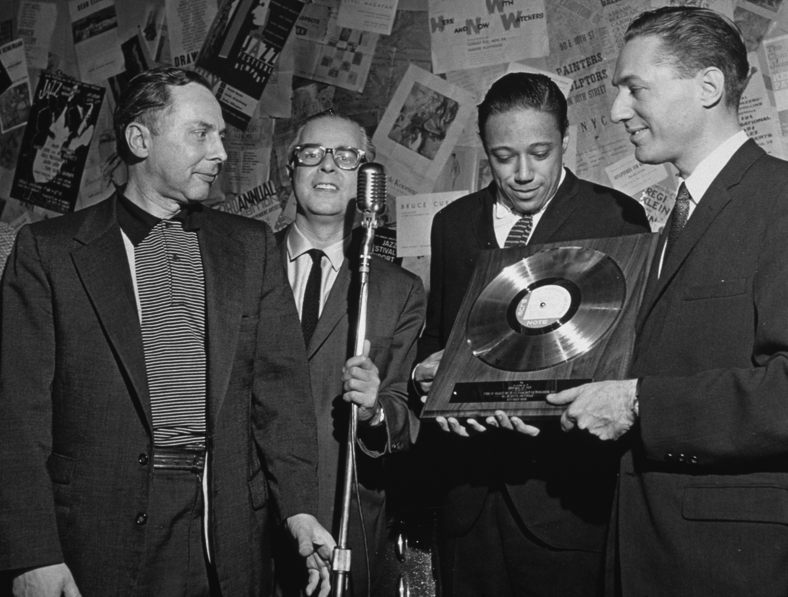
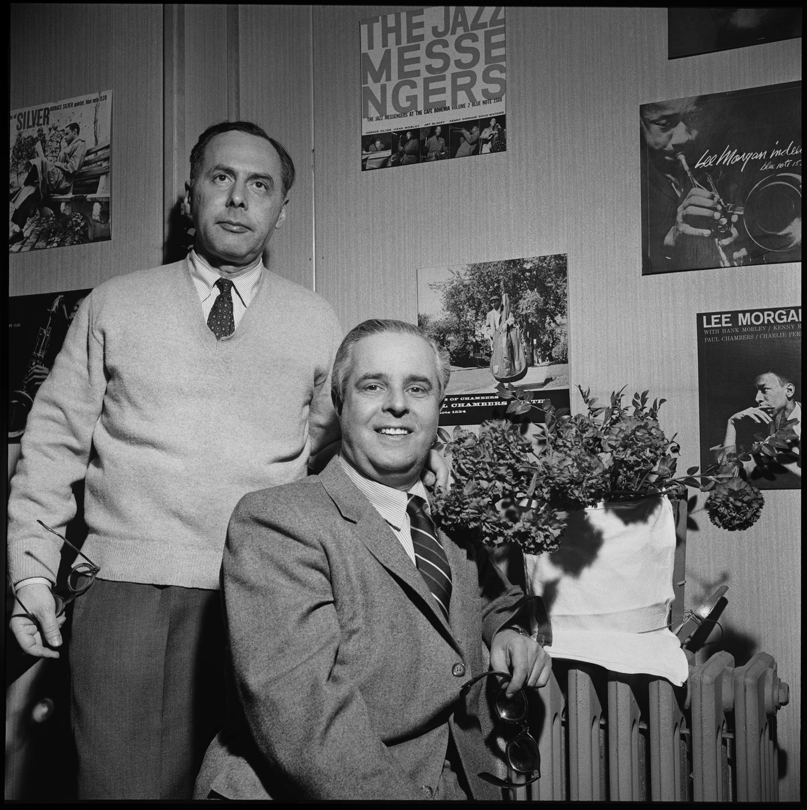
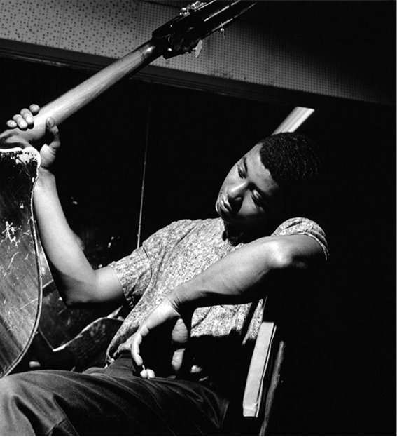
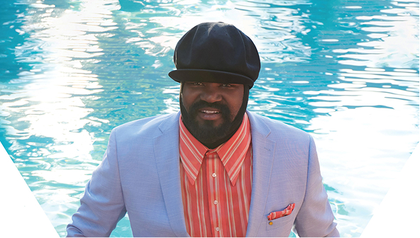

ABOUT
BLUE NOTE RECORDS
01 / ORIGIN THE LION & THE WOLFF.
Blue Note Records was born in New York in 1939, fueled by the passion of German jazz enthusiast Alfred Lion. When his childhood friend Francis Wolff joined him the following year, their shared love of jazz grew into something far greater than a record label. Musicians came to know it as “the kingdom of the lion and the wolf” — a place where the music always came first.
Blue Note Records began in New York in 1939 with German jazz enthusiast Alfred Lion. His childhood friend Francis Wolff joined him a year later, sharing a devotion to the music. Together, they built a label musicians affectionately called “the kingdom of the lion and the wolf”.
Blue Note began in New York in 1939 with Alfred Lion. Joined by Francis Wolff, he built a label musicians called “the kingdom of the lion and the wolf”.
-
ALFRED LION Founder of Blue Note Records
-
FRANCIS WOLFF Co-founder & Photographer
-
 Albert Ammons & Meade Lux Lewis The First Session, 1939
Albert Ammons & Meade Lux Lewis The First Session, 1939 -
LION & WOLFF THE FOUNDERS / 1939
02 / THE WAY WE LISTEN OUR PHILOSOPHY
ARTISTIC FREEDOM / AUTHENTIC CREATIVITY
At the heart of Blue Note lies a belief in uncompromising musical expression. Rather than following commercial trends, the label has championed artistic freedom and authentic creativity. This commitment gave musicians the space to explore new ideas and develop sounds that would leave a lasting mark on jazz.
Blue Note believed musicians should be free to create on their own terms. Rather than chase commercial trends, the label gave artists room to experiment, shaping a sound defined by individuality, imagination, and artistic freedom.
Blue Note put artistic freedom first, giving musicians space to explore new ideas and create music without compromise.
03 / THE STORY CONTINUES OUR LEGACY
From bebop and hard bop to soul jazz and contemporary sounds, Blue Note has evolved alongside the music itself. Its recordings have influenced generations of musicians while remaining an essential part of jazz history. Today, the label continues to embrace new voices, carrying its legacy into the future.
From bebop and hard bop to contemporary jazz, Blue Note has evolved with the music itself. Its recordings continue to inspire new generations, while the label welcomes new voices and sounds.
From hard bop to contemporary jazz, Blue Note continues to evolve. Its recordings inspire new generations while new artists carry the music forward.


